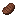

The Umbra Cow is a dark wool-covered cow added by Earthify.
Similar to the Wooly Cow, Umbra Cows grow a thick coat of black wool which can be harvested with shears.
Behavior
- Passive mob.
- Can breed with other Umbra Cows.
- Can be sheared repeatedly.
- Produces black wool.
Shearing
Adult Umbra Cows can be sheared.
Shearing removes their wool coat and drops Black Wool. Wool regrows over time.
Breeding
Two Umbra Cows can breed to produce a baby Umbra Cow.
Umbra Cows cannot breed with other Wooly Cow variants.
Drops
| Leather | 0–2 |
| Raw Beef | 1–3 |
|
 Cooked Beef |
1–3 (if killed while on fire) |
 Black Wool
Black Wool
|
1–3 (when sheared) |